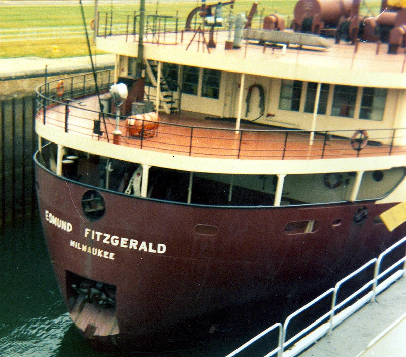
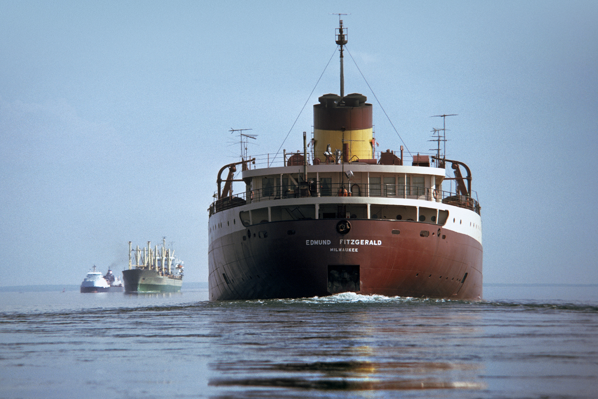
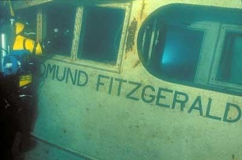

Overveiw
The Edmund Fitzgerald was an American Great Lakes freighter that carried iron ore. she was also known as Fitz, Mighty Fitz, Big Fitz, Pride of the American Side, Toledo Express, and Titanic of the Great Lakes.

Ship specs
- Title: SS
- Owner: Northwestern Mutual Life Insurance Company
- Operator: Columbia Transportation Division, Oglebay Norton Company of Cleveland, Ohio
- Home port: Milwaukee, Wisconson, USA
- Builder: Great Lakes Engineering Works of River Rouge, Michigan
- launch date: June 7 1958
- Call sign: unknown
- Length: 729 feet
- Beam: 75 feet

The man who shONE the spotlight
Gordon lightfoot and his song championed awareness for the tragedy. Ever respectful to the families of the 29 hands aboard he composed the song shown below
S.O.S! S.O.S!
On the afternoon of November 9, 1975, she embarked on her final voyage from Superior, Wisconsin, near Duluth, carrying a full cargo of ore pellets with Master Captain Ernest McSorley in command. En route to a steel mill near Detroit, she was caught the next day in a severe storm with near hurricane force winds and waves around 35 feet It is unknown why she sank or what ultimately could have been done to prevent this. Ships still sail over her gravesite today and her final resting place is legally protected under Canadian law.

The bell ceremony
Each year a bell is rung 30 times to honor those lost.